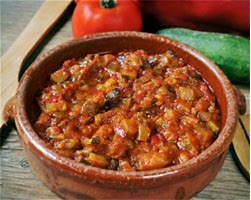
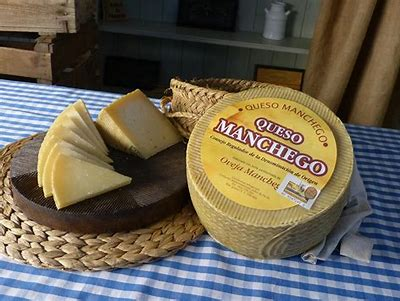
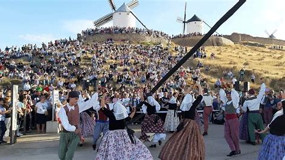
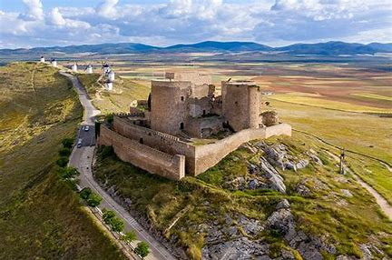

Gastronomía
La gastronomía de Consuegra es rica y variada. Entre sus platos típicos se encuentran el pisto manchego, el queso de la zona y los famosos dulces como el "mantecado". No te olvides de probar el vino de la denominación de origen de La Mancha.


Costumbres
Las costumbres de Consuegra están marcadas por sus festividades, como la Semana Santa y la Fiesta de la Rosa del Azafrán. Estas celebraciones reflejan la rica herencia cultural y la vida comunitaria de sus habitantes.


Sitios Emblemáticos
Entre los sitios emblemáticos de Consuegra destacan sus molinos de viento, que son un símbolo de la región, así como el castillo, que ofrece unas vistas impresionantes del paisaje manchego. No olvides visitar la iglesia de San Juan Bautista, una joya del patrimonio local.
